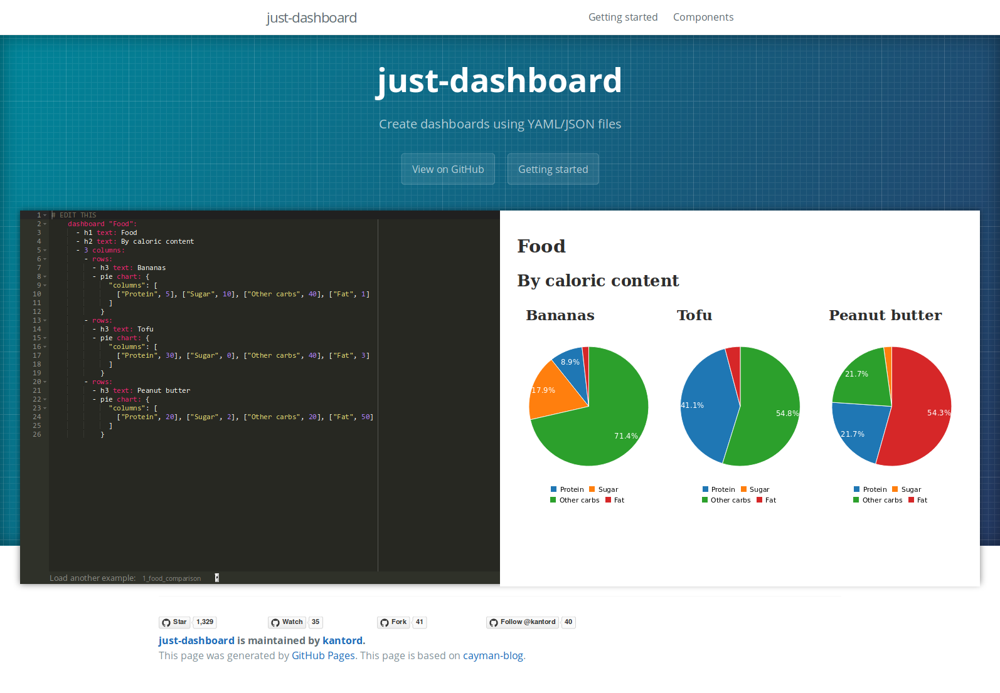

class: center, middle # What is emuto? --- ## What is emuto? emuto is a lightweight JSON processor -- it is inspired by jq and it almost ports it -- it is basically sed & awk for JSON --- ## Why are you building this? -- jq is awesome, but it's written in C -- compiled with emscripten it weighs several megabytes -- I have a project where I need to take queries as input on the frontend and quickly evaluate them in the browser  -- It'd be also nice to support some features based on new ES syntaxes -- __So I decided to build a new compiler that is small enough to use in the browser__